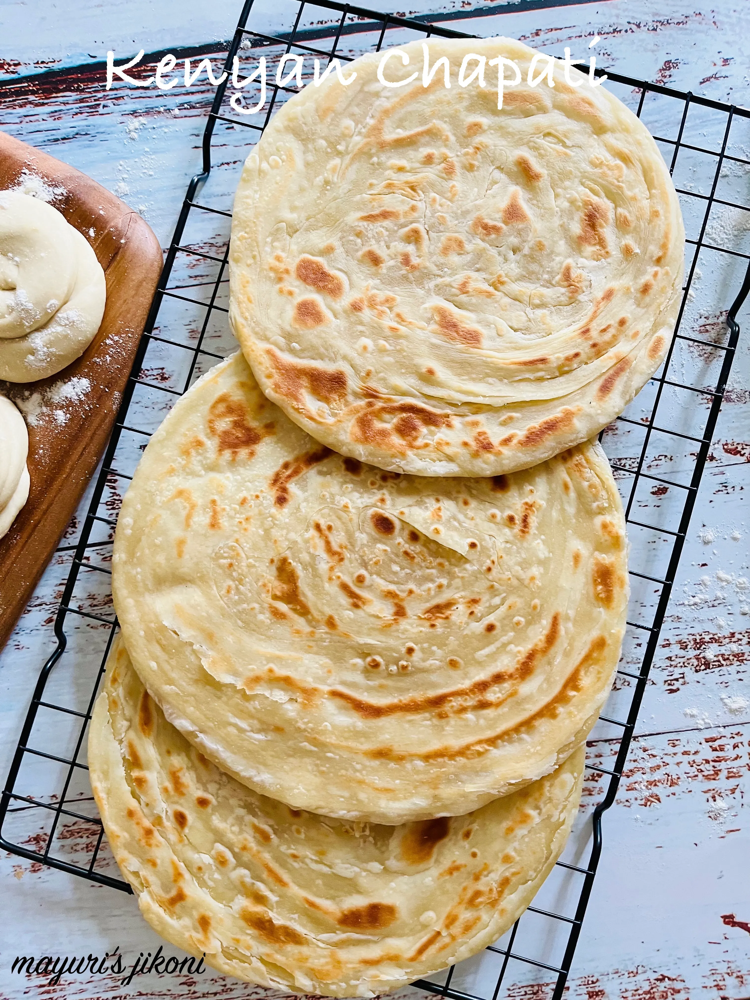

Chapati Recipe

Description
Chapati is a kenyan delicacy and can be enjoyed by itself or with a variety of accompaniments like beans, stews or greens. It takes practice to learn how to make soft delicious chapatis and listed below are all the ingredients and steps needed.
Ingredients
- All purpose wheat flour
- Salt
- Sugar
- Warm water
- Oil
Steps
- In a bowl thoroughly mix 2 cups of all purpose flour, a pinch of salt, a tablespoon of sugar and a table spoon of oil.
- To the bowl of mixed ingredients, slowly add warm water until the dough forms a firm but soft consistency.
- Continue kneading for about 10 minutes until the dough is mixed properly. Add small amounts of oil while kneading repeatedly until the dough loses stickiness.
- Cover the dough with cling film and leave to rest for at least 30 minutes.
- Section the dough into small balls and roll them out individually, applying a small amount of oil to each and rolling them back into dough balls. Leave them to rest for 10 minutes. Meanwhile, heat your pan.
- Roll out each ball of dough into a circular shape and cook in the hot pan with oil until slightly browned on each side. Repeat until all your chapatis are cooked.
- Enjoy !